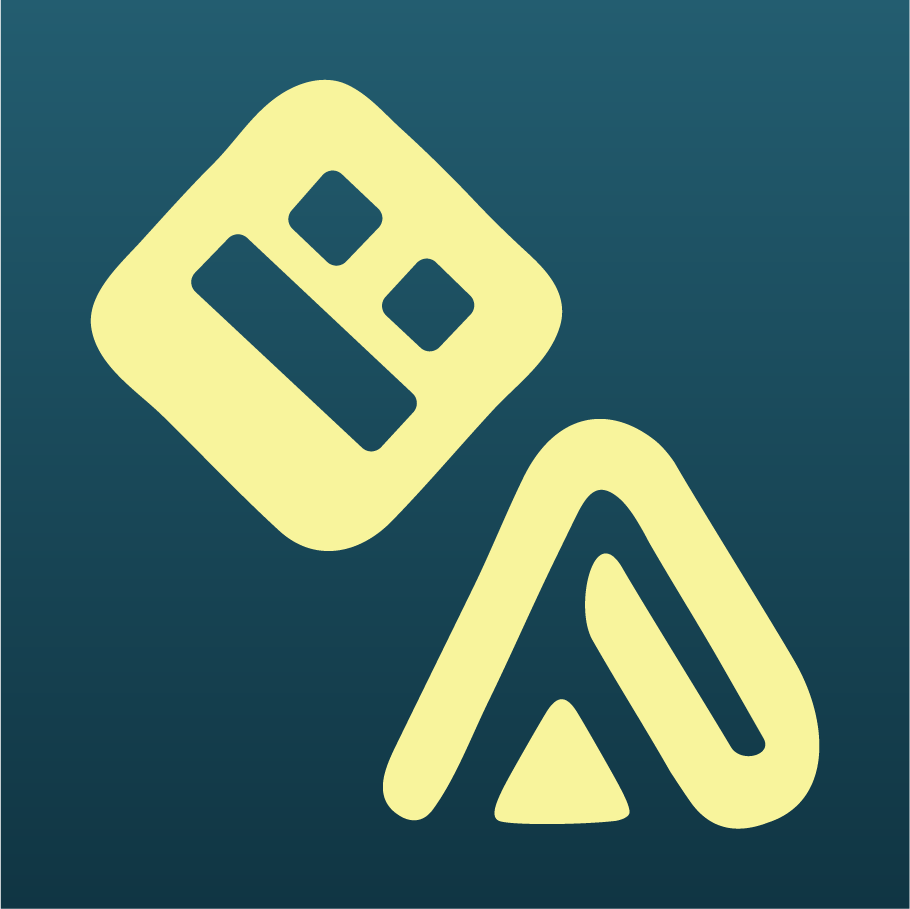
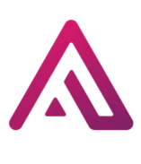

Jump to a Section

ABOUT GDCE 2026
This will be a multi-streamer event lasting 10 days, from Friday, July 17th to Sunday, July 26th, in which we will be raising money for the Autoimmune Association!
Over the last 2 years, we have been working hard to bring the entire Geometry Dash community together for a cause; and this year is no different. We have gathered a talented list of creators, all with their own plans and content ideas, to bring the greatest content possible to the table to both raise money for a great cause and have fun while doing so.
We have raised money for The Trevor Project, raising over $8,000; and City of Hope, raising an absolutely crazy $16,102. Not only that, but last year, we absolutely annihilated our goal of $3,000 five times over. This year, we're going big or going home - which means this year's goal is $10,000, the biggest initial goal we've had ever.
ABOUT THE AUTOIMMUNE ASSOCIATION
The Autoimmune Association is a leading nonprofit dedicated to fighting against autoimmune diseases. By collaborating with researchers, supporting patients, and legislative advocacy, the AA is dedicated to improving the quality of life of those in the autoimmune community.
As a quick overview, their four areas of focus are:
Public Awareness: AA helps the public understand the prevalence of autoimmune disease worldwide, the different conditions within its umbrella, and what it means to live with one or more of these conditions.
(https://autoimmune.org/about-us/)
Research: The AA helps bringing together scientists to exchange research, funding studies on diagnosis, preventative tools, and therapies. One of their notable contributions is ARNet, a patient registry that connects individuals to research studies and clinical trials, accelerating progress in treatment, early detection, and symptom management.
(https://autoimmune.org/research/)
Services & Education: AA empowers and educates patients through accessible resources on getting a diagnosis, finding treatment options, accessing care, managing comorbidities, and improving quality of life.
(https://autoimmune.org/resource-center/)
Advocacy: AA leads initiatives to protect key policies at the US federal and state levels that help improve the lives of those with autoimmune disease. With NIH funding being slashed under the current administration, it is critical to protect federal funding, which has previously advances research in CAR T-cell therapy, precision immunology, and novel diagnostics.
(https://autoimmune.org/advocacy/)

Build Jam
Alongside the GDCE 2026, we're also hosting a Build Jam during the event!
Creators are challenged to make levels during a week period, starting on July 18th and going until the 25th. At the end, we're going to compile all completed levels and throw them into lists, just like with Geometry Dash All Nighter!
If you're familiar with the rules of GD All Nighter, majority of the same rules apply! Here they are if you want to have them for future reference anyways.
To submit your level, we will have a link on the website to a Google Form that will open a day after the Jam begins. Link: (not open yet)
If you have any further questions, hit my DMs and ask away! Have fun and happy building!